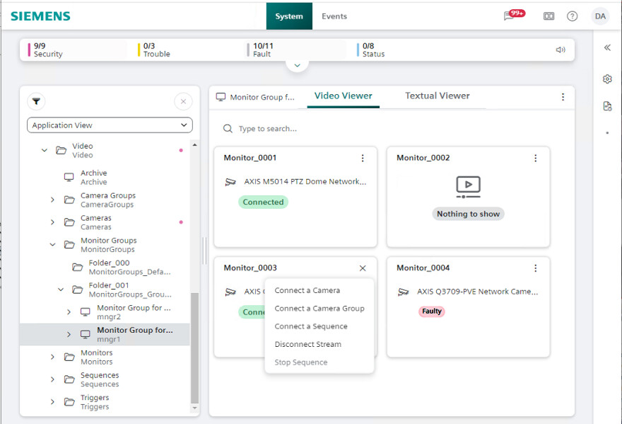
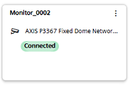
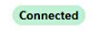
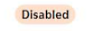
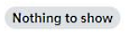
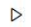
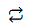
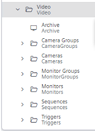

Monitor Control Reference
Video Monitor Control
The Video Viewer can show a graphical representation of a monitor or monitor group. Each monitor is represented by a rectangular tile that provides information about the associated video source, and lets you connect/disconnect video sources. For related procedures, see Monitor Control Procedures.
NOTE: The changes you make here will affect the Desigo CC installed client stations that use the affected monitors. They will not be visible on the Flex station itself.

Monitor Tile
Each monitor tile provides the following:
 |
Whether names or descriptions are shown in the tile information depends on the Text Representation chosen in the Layout settings . |
Status Indications
The color-coded status tag indicates the connectivity status of the associated camera:
 | Green: Camera properly connected. |  | Orange: Camera is connected but disabled in the VMS. |
Pink: Connection fault (video signal loss). |  | Gray: No camera connected |
The monitor tile can also contain the following symbols:

Playback: The monitor is playing back a video recording.
Sequence: The monitor is playing a sequence (looping through multiple video sources).
Location of Monitor Controls
The monitor controls become available when you select a monitor or monitor group object.
 |
To select a monitor:
To select a monitor group:
|
Commands on the Monitor Tile
The ellipsis menu on the monitor tile shows the commands you can use to connect or disconnect video streams. The available commands vary depending on:
- The current connection status of the monitor.
- Whether the System Browser selection is a monitor or a monitor group.
Command | Description | Notes |
|---|---|---|
Connect a camera | Lets you connect a camera to this monitor. | Available when the System Browser selection is either an individual monitor or a monitor group. |
Disconnect stream | Available if the monitor currently has an associated camera (monitor icon not black). | |
Connect a camera group | Lets you connect a camera group to the currently selected monitor group, with start position corresponding to the monitor on which you issue the command. | Available only when the System Browser selection is a monitor group |
Connect a sequence | Lets you connect a camera sequence to the currently selected monitor group, with start position corresponding to the monitor on which you issue the command. | |
Stop sequence | Available if the monitor is currently playing a sequence ( symbol). NOTE: Do not use Disconnect stream to stop a sequence, as this will have only a temporary effect. The monitor will be momentarily disconnected from the current camera in the sequence, but soon after re-connected to the next camera. |
NOTE: If validation is configured on the video objects, when executing the above commands you may be required to enter one or more of the following:
- Your password
- A supervisor's user name and password
- Comment indicating the reason for the change
Notes on monitors and monitor groups |
|---|
Each Desigo CC installed client station has two associated monitor groups:
The same monitor group may be associated to more than one station. Changes to the video streams of a monitor group will affect all the stations that use it. |
The same monitor can be included in multiple monitor groups. Changes to the video streams of a monitor will affect all the monitor groups that include it. |